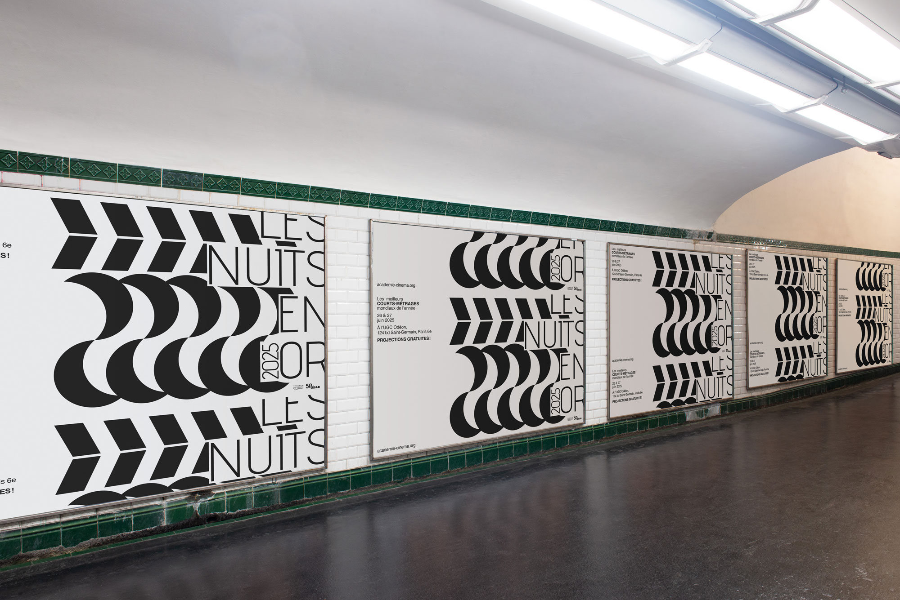

NUITS EN OR
Identité visuelle conçue sur deux supports
pour le concours du festival de courts-métrages
Les Nuits en Or 2025 ayant pour thème « L’imaginaire
du Cinéma ».
Jeu sur le motif du clap et de la lune pour évoquer la machine hypnotique et captivante qu’est le cinéma.


Affiche 400x600 mm
Affiche 1920x1080 px
Projet ECV